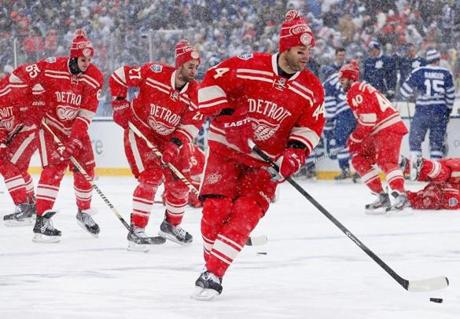

The Detroit Red Wings
The Detroit Red Wings As of 2018, the Red Wings have won the most Stanley Cup championships of any NHL franchise based in the United States (11) and are third overall in total Stanley Cup championships, behind the Montreal Canadiens (24) and Toronto Maple Leafs (13). The Red Wings had appeard in 25 straight plays off from 1990-91-2017. This team, like the Bruins had a lot of amazing hockey players, who are now in the hockey Hall of Fame. The Red Wings were one of the first NHL teams to play in the outside hockey game called the Winter Classic.
